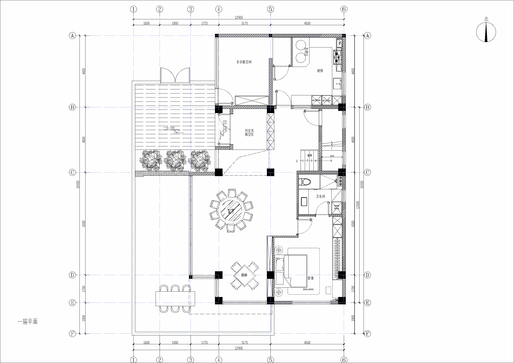

⌂
庭序
四层别墅 · 空间漫游
全楼
ALL
四层
4F
三层
3F
二层
2F
一层
1F
编辑
查看平面图
⛶
正在打开这栋房子…
WHOLE HOUSE
四层别墅总览
白墙 · 石材基座 · 两段中式屋顶
立体
俯视
N
↑
进入室内漫游
→
返回本层全景
↗
INTERIOR WALKTHROUGH
室内漫游
×
● 四层完整模型 · 门窗连通 · 墙顶地封闭
镜头高度
1.65 m
视野角度
68°
水平朝向
0°
俯仰角度
0°
↑ 前进
← 左移
右移 →
↓ 后退
重置人眼视角
退出漫游
WASD 或方向键移动，Esc 退出
×
编辑
请选择墙、门窗、围栏或家具
×
选择构件后拖动控制点
当前长宽高
—
长 m
宽 m
高 m
回车或离开输入框应用
点击模型构件开始编辑
○ 吸附 22 cm
替换款式
向右滑动 →
撤销
恢复
删除
退出编辑
拖动旋转 · 滚轮缩放
点击房间或家具查看
↺
家具
名称
自动旋转
ORIGINAL DRAWINGS
四层平面图
×
一层
二层
三层
四层

平面关系依据原始图纸；网页模型用于空间展示，墙厚、门窗高度和家具造型采用当前方案。